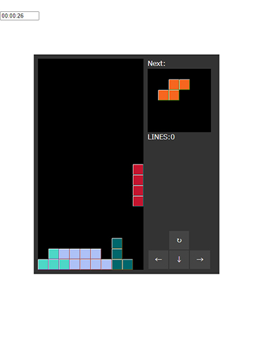
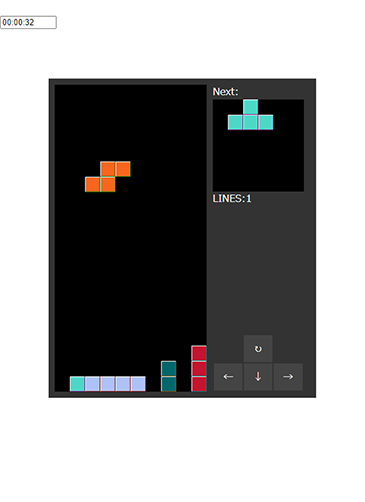

難易度を 選択してください
遊び方
テトリスとは・・・
上から落下してくる「テトリミノ」を組み合わせ 横一列に並べることで テトリミノを消していくゲームです。

→
↑赤色のテトリミノが入ったことで 横一列が並び 削除されました！
基本操作
難易度が易しい easyモードでは 操作キーは四つ。
画面に表示されているボタンをクリックするか キーボードの矢印キーを使って 操作ができます。
→ボタンで右移動 ←ボタンで左移動 ↓ボタンでテトリミノの落下速度を速めます。
↑ボタンか回転ボタンを クリックすることで テトリミノを回転させることができます。
NORMALモード以上の難易度になると 回転ボタン及び ↑ボタンは 使うことができません。
テトリミノを回転せずに どこまでテトリスを続けられるか 是非挑戦してみてください！
タイマー機能で記録に挑戦
このテトリスにはどのモードにも タイマー機能がついています。
ゲーム終了時には結果が表示されるので 長くテトリスを続けられるよう タイム更新を目指して頑張ってください。